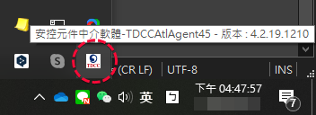

自我確認事項
- 電腦環境： Windows作業系統 + Chrome瀏灠器
- 執行投票前，請確認TDCC集保安控中介程式已啟動(如下圖示)，否則無法成功登入！
 - 確認所有投票帳號的券商網路下單憑證已匯入Chrome憑證管理，在電子投票網頁按下登入後即可直接登入，不會再有多餘的手動選擇憑證動作！


※不支援其他種類憑證！
※Chrome憑證管理可參考股東e服務網站的PDF說明文件，第二項，步驟 4 可匯入憑證！
 Set IDs：設定所有投票者的完整身份證字號，填完後直接按☒離開！
Set IDs：設定所有投票者的完整身份證字號，填完後直接按☒離開！假設ID001~ID004為已註冊身份證字號，ID005為已試用過身份證字號，ID006為黑名單身份證字號，ID007為未註冊身份證字號！

 Auto Voting：開始進行投票
Auto Voting：開始進行投票

正常情況下，投完會出現結束投票, 請關閉此視窗!


 Create PDF
Create PDF將程式所在目錄下的截圖文件夾，整理到A4大小的PDF檔。


印出後，以條碼槍實測可正確掃瞄出條碼。